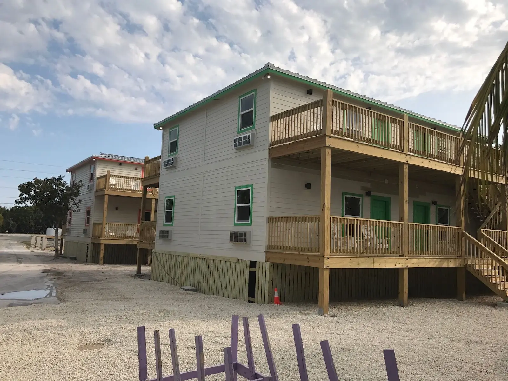

Florida Keys Aquarium Encounters
Construction of the Eagle Ray Café at Florida Keys Aquarium Encounters, one of Marathon’s signature attractions — from foundation through framing and walls — along with work at the aquarium’s Big Tank.

Residential & commercial
New construction, remodels, foundations, stairs and accessibility upgrades for homeowners, resorts and some of the Keys’ best-loved destinations.
Local knowledge
Flood-zone elevations, high wind-load requirements, salt-air corrosion, tight island lots and a permitting process all its own — including Monroe County’s ROGO building-permit allocation system. We’ve worked within these realities for decades, and we plan every project around them from day one.
From a café at one of Marathon’s signature attractions to new resort units and modular homes, we take projects from site work to finished building — foundation, framing, structure and the finish work that follows.
Construction of the Eagle Ray Café at Florida Keys Aquarium Encounters, one of Marathon’s signature attractions — from foundation through framing and walls — along with work at the aquarium’s Big Tank.
New guest units and a new modular structure for a waterfront resort in Marathon.
An elevated residential modular home, set and finished on site — an efficient path to a new home in the Keys.
Kitchens, interiors and whole-home updates — done with the structural know-how we bring to everything else, so what’s behind the walls is as solid as what you see.
A complete kitchen renovation — new cabinetry, stone countertops and stainless appliances.
In the Keys, foundations sit on coral rock and fill — often in flood zones — and must resist uplift as well as load. We form, reinforce and pour foundations for commercial buildings and homes, and we’ve been pouring them since 1968.
Foundations formed, reinforced and poured for commercial and residential buildings — including the Eagle Ray Café at Florida Keys Aquarium Encounters.
Exterior stairs in the Keys take more abuse than almost anything else on a building. We frame and build durable stairs for resorts and elevated homes — including the full replacement of worn waterfront stairs at Hawks Cay Resort.
Worn waterfront stairs at Hawks Cay Resort, replaced from the framing up with a sturdy new build made for heavy resort traffic.
Framed and finished exterior stairs for elevated Keys homes, built to stand up to sun, salt and everyday use.
Accessibility is about dignity and independence. We build code-compliant ramps, widen walkways and remove barriers at public-facing facilities — including a new ADA ramp at Marathon’s Turtle Hospital.
A new ADA-accessible ramp at The Turtle Hospital in Marathon — the famed sea turtle rescue and rehabilitation center — so visitors of every ability can get to the patients.
A narrow walkway widened to provide comfortable, accessible passage.
Start a project
Tell us about your plans. We’ll help you understand what it takes to build in the Keys — permits, elevations, materials and schedule — and give you a clear proposal.